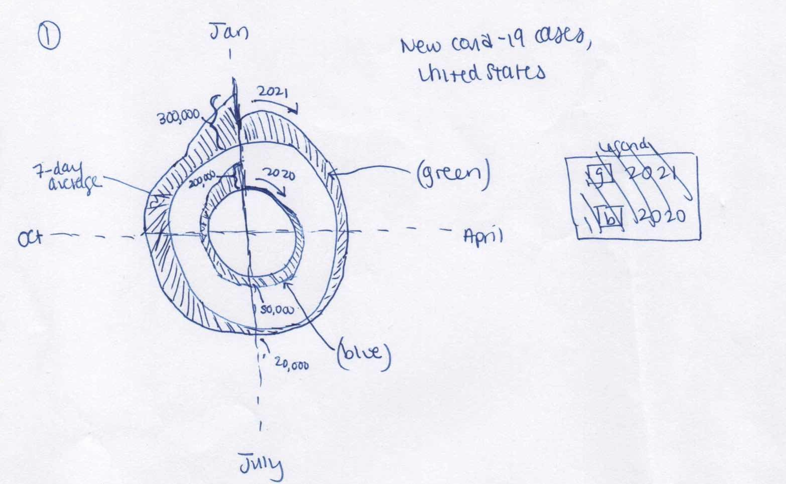
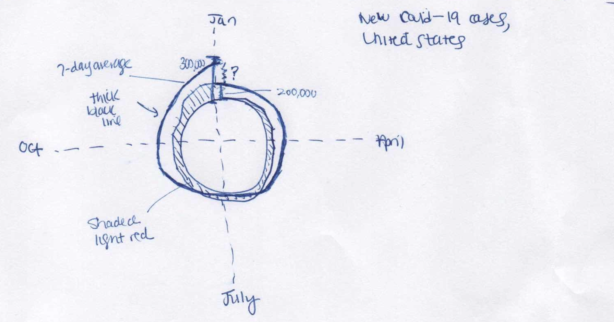
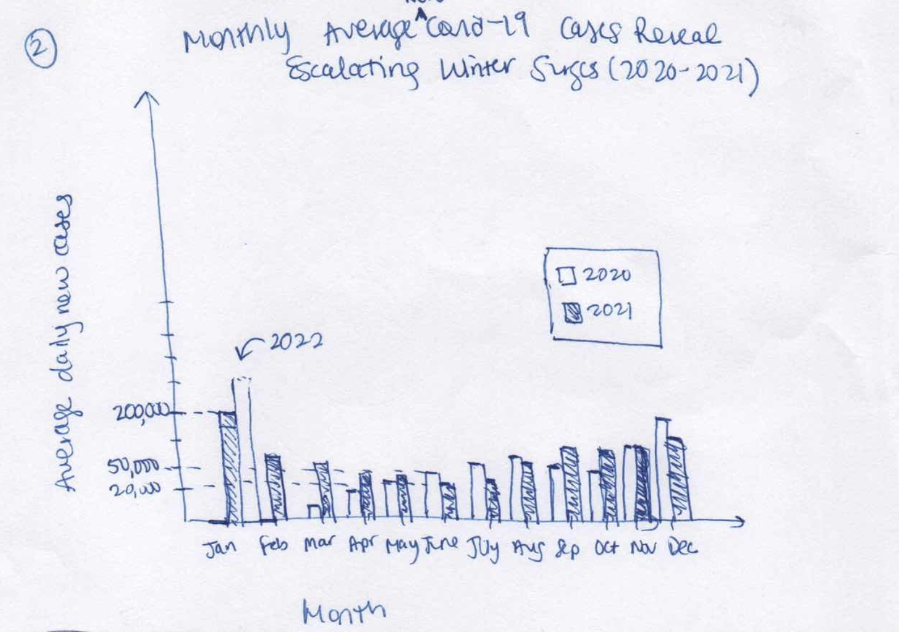
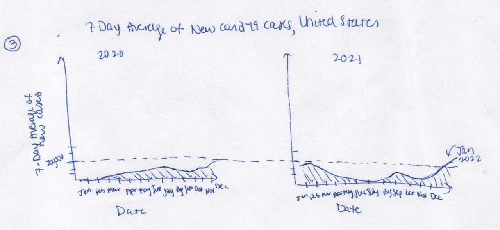
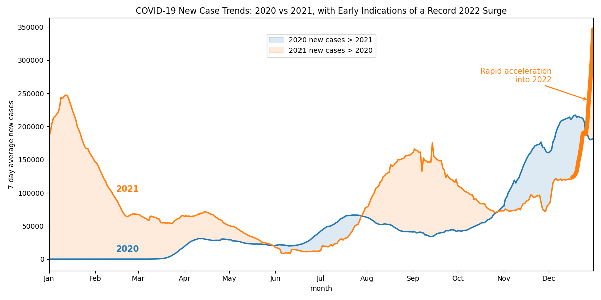

Reading & Critique

Insights about the data/visualization:
- This figure is depicting growth in covid cases (through a 7 day average of new covid cases) from the start of covid until when the article was published in January 2022
- The figure uses angle to encode month, radial distance from spiral to encode number of cases, and spiral to encode year progression.
- Even though there was a slowdown in new cases from October-the beginning of December 2021, the number of new cases in the US is greatest in January 2022 (over 300,000) compared to other years (2020 and 2021)
- There is a cyclical nature to the number new covid cases over time (and this is a more important takeaway than the absolute values)
- There was a local peak in new cases in January 2021
- In June 2021, new cases went down to unprecedented low number for the first time since the pandemic started and then rose again in September
- Before March 2020, there were no new covid-19 cases in the United States
- The 7 day average for new covid cases in the US in January has been steadily increasing year after year (from 2020-2022)
- The number of new cases in the US is greater in fall and winter compared to spring and summer
- The average number of new cases rose over 150k for the first time in the US in December 2020
- The peak 7 day average number of new cases before January 2022 was in January 2021
Design Critique:
The figure on its own, without many annotations or quantitative labels, conveys the cyclical nature of covid case growth over the last 2 years, the growth in cases from 2020 to 2021, the seasonality of cases (far more new cases in the winter months than summer months), and the fact that the growth in 2022, while uncertain, will likely be unprecedently high. I found that the visualization did not really send any of the messages that I received from the broader article it came from. The article discusses how the Omicron variant is causing a record number of infections but how there’s uncertainty in just how pervasive it will be in January 2022 and beyond, as well as explains the modeling epidemiologists conduct to try and predict it. The article also covers how Omicron will produce record-breaking case numbers in the near term, but the severity and longer-term trajectory of the pandemic are uncertain. It doesn’t seem to highlight many of the conclusions I drew from the visualization (seasonality, growth from 2020 to 2021). Throughout the rest of this assignment, I will critique and redesign the visualization with the intended messaging from the original figure and not from the article text. In evaluating the efficacy of the visualization in conveying seasonality, growth in cases from 2020 to 2021, and the expected record breaking cases going into January 2022, I find the spiral is effective in showcasing seasonality and cyclical recurrence of covid case growth, however it may take the target audience- the general public of the US- a moment to orient themselves to the visual encoding (as it did for me). As first I thought 2020 was on one side of the radial axis and 2021 was on the other because I did not understand why the area on both sides did not appear symmetrical. I later realized that this probably just a product of the inner area being smaller than the outer area, and that the data is, in fact, symmetrical across the axis. There is simplicity in the labeling and design choice to not annotate any quantitative values or crowd the visual with numerical axes, which forces the audience to mostly focus on shape and the revealed patterns, but the distance (white space) between years within the spiral render comparison of magnitude of new cases between 2020 and 2021 challenging. The alignment of January 2020, 2021, and 2022 at the top of the figure does draw the viewer’s eye, but the scale is not easy to interpret. Yes, the number of new cases will be higher than ever before in January 2022, but by how much? Are we talking about 50,000 cases or 150,000 cases? Without an annotation, I need a ruler to really interpret the scale. Further, I enjoy the radial visual’s ability to facilitate comparisons across years and patterns over time, but I am not convinced we couldn’t discern these patterns more easily with a simple line or bar chart. There is cognitive load required to orient myself to the figure and where time sits within the figure. The black line could be confused for number of cases, encoded as distance along radial axes from origin, while the red shaded area could be capturing some error or uncertainty in predictions over time. Further, The visualization subtly communicates that covid surges are cyclical and therefore somewhat predictable, but the article argues contrarily that the upcoming wave is unusually large and variant-driven, not just seasonal. Additionally, if the figure was meant to support the article, annotating different variants, or at least highlighting the start of Omicron, would be helpful. However, as stated above, I will assume the intended message of the visualization is not meant to align with the article.
Visualization Sketches


Design Rationale for Sketch 1:
- I would not use both of these figures together, I was trying out both to see if maintaining the circular axis could address some of the critiques of the original figure. This axis is strong in depicting cyclical patterns and facilitating visual comparisons of seasonality
- In both of these redesigns, number of cases is shown on only the outside of the circular axis address some of the confusion I experienced with the number of cases on both sides of the axis and trying to understand if it was symmetric or not in the original, which was easily confused with estimates of error.
- While not drawn properly to scale, the concentric axes can be brought closer together, addressing my critique of the original that the distance between years in the spiral render it difficult to make comparisons across years
- The use of concentric circles and color coding years in the first redesign maintains the seasonality comparison while removing confusion around the spiral structure
- In both of these redesigns, January is in the same place as the original, facilitating easy comparisons of the growth of cases year over year in this month, and drawing the audience's attention to the big jump going into Jnauary 2022
- In the first redesign, the concentric axes of different colors are used to separate 2020 from 2021, and in the second the use of shading for one year and use of a thick black line for the other facilitates faster discernment of the years, which was harder to discern in the original
- Adds a couple quantative labels/annotations to demonstrate the scale of new cases (just in January and July in the first redesign, just in January in the second) within the figure, reducing the cognitive load of reading the figure with the scale in the original

Design Rationale for Sketch 2:
- The circular/radial axes are in general requires more cognitive effort to interpret than a linear axis because we aren't used to seeing them as much and it takes viewers time to orient themselves to the visual encoding. In this redesign, we move away from the circular axis back to a linear axis that is more familiar and easier to interpret.
- The bar chart of monthly averages of new cases puts 2020 and 2021 cases side by side, facilitating easy comparisons of cases across years and months
- Minimal quantitative labeling on the y axis maintains the original figure's clean aesthetic that highlights pattern recognition over direct numerical characterization, while still providing enough information to understand the scale of cases in both the summer and winter months

Design Rationale for Sketch 3:
- Like the last redesign, this one uses the linear axis, which reduces cognitive load in the orientation to the figure
- I found the bar chart of the last redesign, with only 12 bars instead of smooth daily data, did not reveal patterns of new cases throughout each year as clearly as the original does. The line chart of new cases is much clearer in showing seasonal and annual patterns
- Small multiples display facilitates exploration of intra-year and inter-year patterns in new cases
- While not drawn well, a properly scaled y-axis that only has one label for the peak in January 2021 more directly enables the viewer to conceptualize the scale of the growth of new cases going into 2022
Final Visualization Design

Final Writeup
As stated in the critique above, the message I am trying to convey is the seasonality of covid cases, growth in cases from 2020 to 2021, and the expected record breaking cases going into January 2022. The continuous line chart emphasizes temporal flow, which supports the idea of seasonality, as viewers can see the rise and fall patterns of new cases across months, rendering winter peaks visually salient. The bar chart had fragmented time continuity, while the radial chart added cognitive load. The linear format also facilitates year-over-year growth comparisons with ease. Including both years on the same scale and axis supports the message of growth from 2020 to 2021 because with the shared y-axis, viewers can immediataely discern that the 2021 winter peak was greater than the 2020 winter peak, that the 2021 later summer surge far exceeded the summer growth in 2020, and that December 2021 acceleration into 2022 starts from a higher baseline than the previous year. I've maintained the use of the 7-day average from the original figure as it removes reporting noise and adds clarity to the true seasonal shape of the covid surges. The x-axis uses months instad of numeric dates to both reinforce seasonality and allow viewers to compare the same month across years. As with the original figure, numeric dates would detract from the overall messaging about cyclical nature of cases between and across years. The y-axis scale extends enough to allow the "record-breaking" message to be visually credible rather than exaggerated, while still showing the 2020 peak and the 2021 peak exceeding it. Blue, a color that reads as cooler and calmer, was used to encode 2020 while orange, a color that is warmer and conveys more urgency encodes 2021. This enforces the narrative that 2021 was worse and is accelerating. The shaded regions serve 2 purposes: visually encoding year-over-year dominance and emphasizing that 2021 outpaces 2020 in terms of new cases for majority of the year. Direct year labels on each line were chosen over a legend for each line to reduce "lookup friction" and enable the viewer to stay focused on comparing the 2 years instead of having their eyes dart all over the figure. The arrow/annotation, combined with the thickening of the 2021 line, draws the viewer's attention to the expected record-breaking surge in January 2022, which is a key message of the figure. The annotation also provides some quantitative context for the scale of the surge, which was a critique of the original figure. The title further establishes comparison across years and frames the interpretation of the winter 2021-2022 spike as record-breaking, priming the viewer to read the graphic through a seasonal lens. Overall, this design aims to balance clarity and simplicity while effectively conveying the intended messages about seasonality, growth, and expected trends in covid cases.
This final redesign addresses many critiques I raised about the original visualization, particularly around magnitude comparison, interpretability, and clarity of messaging. The shared linear axis reduces cognitive load required to orient to the original figure, rendering magnitude comparisons across seasons and years without turning of the head or going back and forth with the scale. The annotation in the final redesign supports the message of record-breaking surge in January 2022, which was a key message that was a bit buried in the original figure. The use of color and shading emphasizes the growth from 2020 to 2021 and the seasonality of cases, while the title frames the interpretation of the figure through a seasonal lens. The consistent y-axis scale allows for clear visual comparison of case numbers across years and seasons, addressing my critique that the white space in the spiral design hindered such comparison. However, the redesign is not without limitations. The use of a linear axis may distort inter-year patterns if data spans multiple orders of magnitude. The original spiral was effective in conveying cyclical nature of cases, and the linear figure is missing continuity between the end of one year and the start of the next. It is more effective to connect the two as the winter season, which spans both, sees the greatest peaks. There are also emotional aspects to the spiral, communicating a message of "we've been here before" that is lacking in the final redesign, and while difficult to interpret, the spiral's uniqueness does draw the reader in. While my final redesign adds clarity, it loses metaphorical storytelling that the original had. There is a tradeoff between explicit annotation of (and drawing attention to) the unprecedented growth and communicating the uncertainty in the projections that the original article conveyed. Finally, there are many visual encodings that I played with. In earlier iterations of the final redesign I had also included a dashed horizontal line at the 2020 peak, had played with including the lines in the legend, had experimented with excluding the shading concept altogether, had gone back and forth on thickening the 2021 line in December AND adding the annotation, or simply doing one or the other. It was balancing act to highlight important features of the narrative without overcrowing and overexplaining the figure/data.